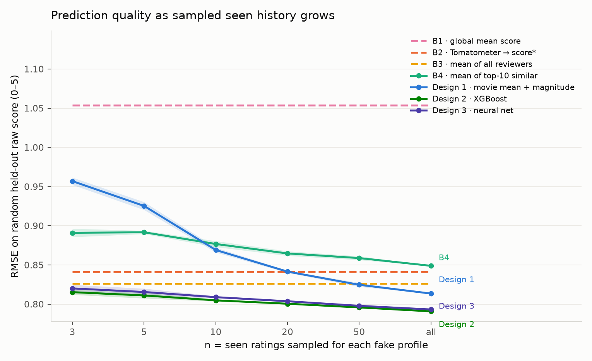
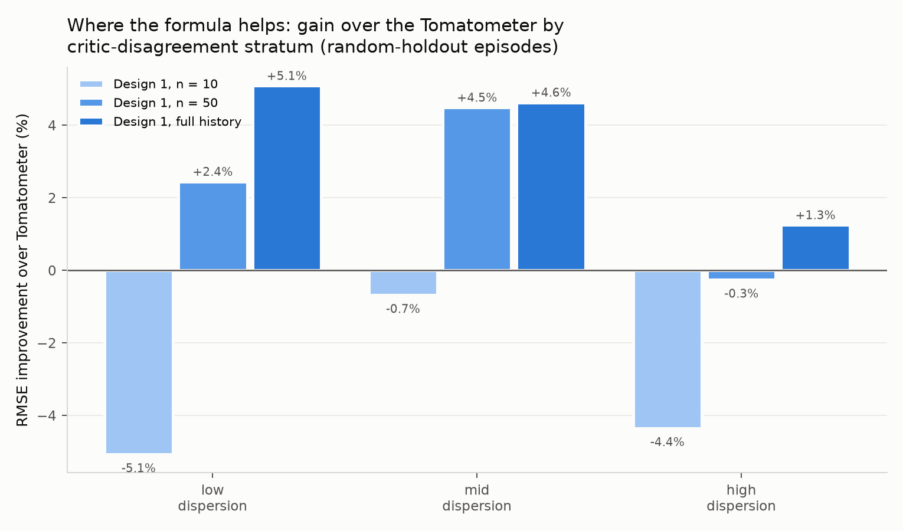
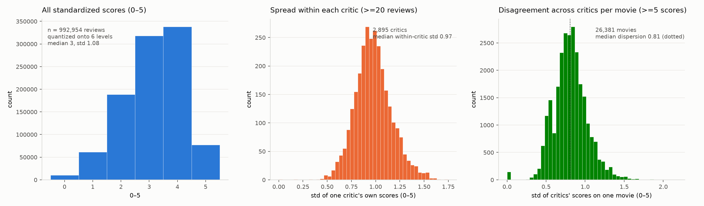

Palate predicts the rating you would give a film from the scores of professional critics — matching you to the reviewers whose taste tracks yours. It is really a measurement project: where does personalization actually beat the flat critic average, and where does it just pretend to?
The idea
The data has no real users, so each of ~3,700 professional critics becomes a stand-in: some of their ratings are "films they have seen", one held-out film is the target, and the target is predicted from the rest of the critic pool. Three designs compete on the exact same held-out films:
An explicit rule: centre each film on its critic mean, then add similarity-weighted, magnitude-scaled deviations.
Gradient-boosted trees over 38 engineered features (similarity deciles, consensus, dispersion, your average).
A residual MLP ensemble with a genre embedding, trained on the GPU over the identical features.
Full-history RMSE on the standardized 0–5 rating scale (lower is better).
The headline
| method | 3 | 10 | 50 | all |
|---|---|---|---|---|
| Tomatometer → score | 0.841 | 0.841 | 0.841 | 0.841 |
| Mean of all reviewers | 0.827 | 0.827 | 0.827 | 0.827 |
| Analytic formula | 0.957 | 0.869 | 0.825 | 0.814 |
| XGBoost | 0.815 | 0.805 | 0.796 | 0.791 |
| Neural network | 0.820 | 0.809 | 0.798 | 0.793 |

The honest finding
The ~4% gain over the critic average is almost entirely knowing whether you rate high or low — anchoring the consensus on your own average. An attribution test shows that similarity-based taste-matching, the project's whole premise, adds essentially nothing on top.
Scaling the network wider, deeper, and on twice the data moved the loss by nothing: on these engineered features the ceiling is set by the information in the data, not model capacity. Reported honestly rather than tuned to manufacture a difference.

The data
Every score — 4-star, letter grade, percentage — is standardized onto one 0–5 scale before anything else.

Try it
A Streamlit app lets you rate films with clickable stars and watch all three models predict the rest live — then, if you score your prediction films, it tells you which method is closest to your own taste. It runs locally (Streamlit needs a Python server, which static hosting can't provide):
streamlit run app/streamlit_app.py — see the
README to reproduce end-to-end.